Zainab Abadi
Product & UX/UI designer in Madrid. I work out why complex products are hard to use, then fix them, with research, accessibility and design systems.
Articles
Case study
Building an Immersive Design System
Writing
A Painting Story
Writing
Mapping the Hormonal Health Ecosystem
Writing
Building My Portfolio: From No-Code to a Custom Frontend
Writing
Building My Portfolio, Part II: The Design System Behind the Code
Writing